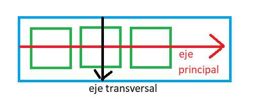

La segunda propiedad que podemos cambiar a un contenedor de cajas flexibles se llama justify-content.
La propiedad justify-content controla como se distribuyen los items a lo largo del contenedor.
Por defecto la propiedad justify-content almacena el valor "flex-start".
Los valores que podemos asignarle a la propiedad "justify-content" son:
Cuando la propiedad flex-direction almacena el valor "row" el eje principal es el horizontal y el eje transversal es el vertical:
Cuando modificamos la propiedad "justify-content" los item se distribuyen con respecto al eje principal del contenedor.
Probemos ahora de seleccionar en la priedad "flex-direction" el valor "column" y pasemos a ver que sucede con cada valor que le podemos asignar a "justify-content". Los espacios ahora aparecen en forma vertical, esto debido a que ha cambiado el eje principal y el eje transversal:

La propedad "justify-content" tiene sentido cuando hay espacio no ocupado por los items y la distribución de dicho espacio es: